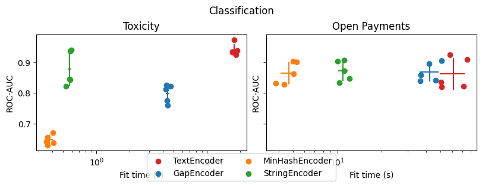
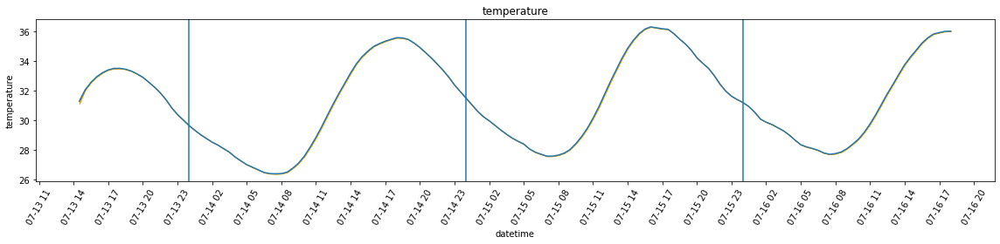
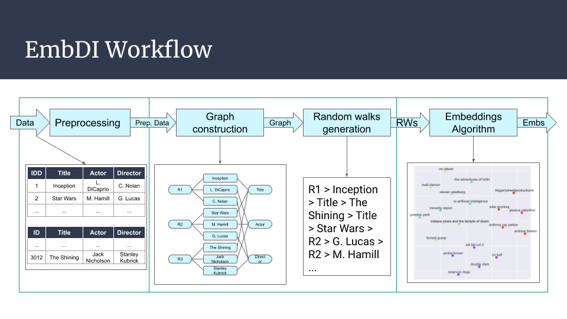

A blog by RC
Posts
Publications
About
Posts
Categories
All
(18)
(1)
Introduction
(1)
IoT
(1)
academia
(1)
arduino
(1)
blade and soul
(1)
code
(2)
data visualization
(1)
embdi
(1)
games
(1)
news
(8)
raspberry
(3)
skrub
(1)
EuroSciPy 2025: thinking back on the event and my tutorial
The week of EuroSciPy 2025 has just ended, and now it’s time to take stock of all the various talks I attended, those that I missed out on, and some other personal…
Sep 26, 2025
Riccardo Cappuzzo
SODA Kickoff: a new slide deck for skrub
news
Today we had the SODA Kickoff, an event organized by some of the PIs (I still don’t know what “PI” stands for, other than that it’s not “private investigator”) of the Inria…
Jun 3, 2025
New publication: Retrieve, Merge, Predict
academia
news
Almost exactly two years in the making, our paper “Retrieve, Merge, Predict - Augmenting tables with data lakes” has
finally
been published in TMLR: you may find it here.
May 19, 2025
Fetching and preparing Last.fm data for beautiful data visualizations
code
data visualization
One of the things I enjoy the most about my job is having the opportunity of turning data into images, coming up with ways to tell myself and others a story.
May 4, 2025

New blog post: testing Skrub categorical encoders
news
skrub
I wrote a new blog post on the Skrub materials website!
Mar 30, 2025
Theorycrafting for Blade and Soul: introduction and damage formula
code
games
blade and soul
Videogames are my biggest passion, and trying to play well is something I do whenever I enjoy a game. For me, minmaxing is part of the fun.
Mar 29, 2025
2024 wrapped: ups, downs, and some changes
news
It’s the end of the year, so I decided I had to do my semestral wrestling bout with Hugo to go over what happened in the past 12 months.
Dec 30, 2024
My 2024 (so far) in academia
Disclaimer: this post will mostly be a rant. The reasons for it should become sufficiently clear as I go over my experience in the past few months.
Oct 8, 2024
Moving up… or sideways?
news
So, my postdoc is about to end (just a few more weeks left), and it seems like my next position has been decided! I will be a research engineer at P16, a development unit…
Sep 13, 2024
New story on Medium: Retrieve, Merge, Predict
news
I wrote a blog post on Medium! It summarizes most of the work we did in a more digestible format than an academic paper.
Sep 12, 2024
New submission: Retrieve, Merge Predict at VLDB2024
news
We submitted a revised version of our benchmarking paper to VLDB 2024, with the title “Retrieve, Merge, Predict: Augmenting Tables with Data Lakes”.
Feb 1, 2024
Some updates
news
It’s been a while, hasn’t it? According the newly added archives page, the latest post in this blog goes back all the way to July 2022… Well, it does not seem like I kept my…
Feb 5, 2023

Studying the temperature readings
raspberry
IoT
In this notebook, I will take a look at the readings from a DHT22 temperature-humidity sensor that I have left for a few days in a couple of locations in my house. As I’m…
Jul 17, 2022
Coding the Thermometer
raspberry
In this post, I will describe the code I have developed to run the thermometer, log the data and save it in such a way that it can be used to carry out some (limited)…
Jul 12, 2022
Preparing a Raspberry-based thermometer setup
raspberry
arduino
The device, and the accessories.
Jul 11, 2022

Introducing EmbDI
embdi
Out of all the work I’ve carried out during my PhD, EmbDI is by far the most important contribution. I’ve dedicated about half of PhD years working on designing, developing…
Apr 12, 2022
Publications
Here are my main publications:
Apr 7, 2022
Something about this blog
Introduction
The idea behind the blog is having a single place where I can put posts on stuff that interests me, or things I have learned over time, or weird side projects I embark in…
Mar 29, 2022
No matching items